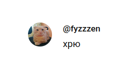
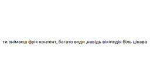

mc світи — ccCraft

mc світи — Еволюція (World1)


mc світи — Статистика

mc світи — Карти

mc світи — Вміст контейнерів

mc світи — Інвентарі
IT


віртуальної машини для
роботи з образами Windows
YouTube

Конфлікт з язєфою — коментатори 3-й сорт


на коментар VaresBlack


на мою відповідь Фюзену

на мою відповідь язєфі


Конфлікт з язєфою — коментатори 2-й сорт


"1.17 не має існувати" з
"Українці не мають існувати"


Конфлікт з Одинадцятим

альтернатива інтерфейсу Windows"